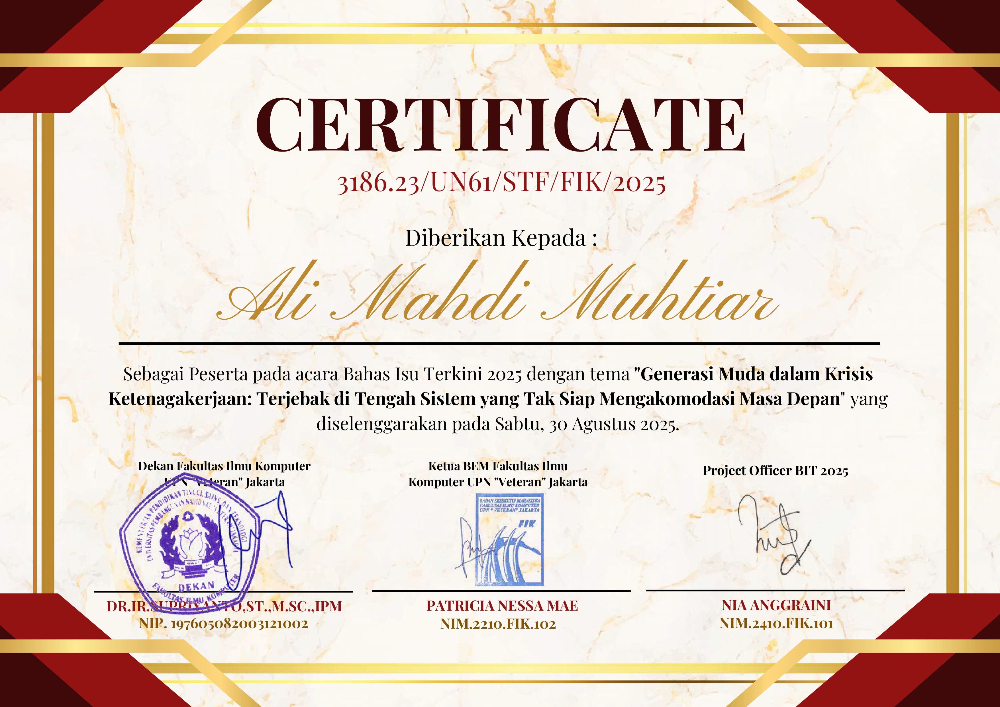
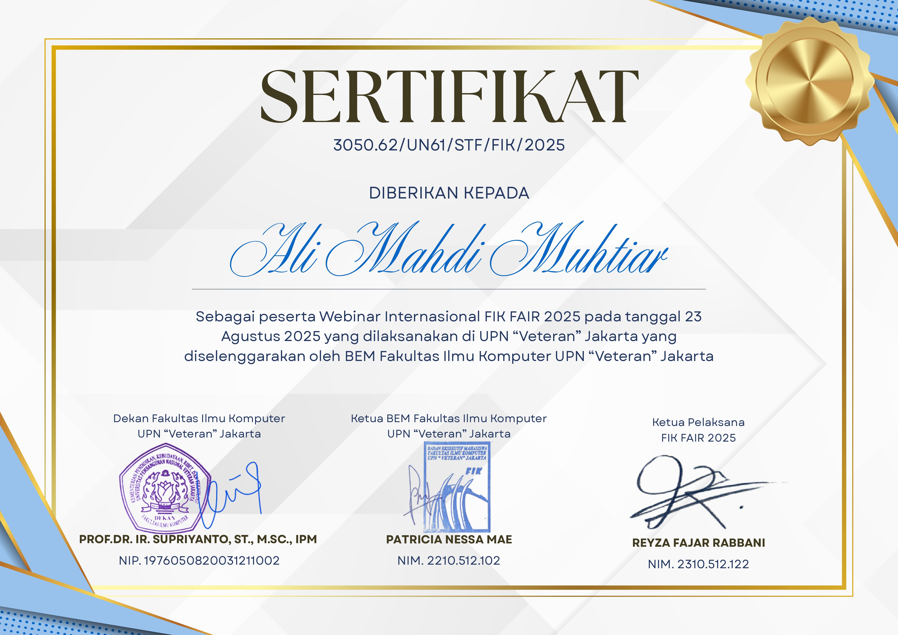
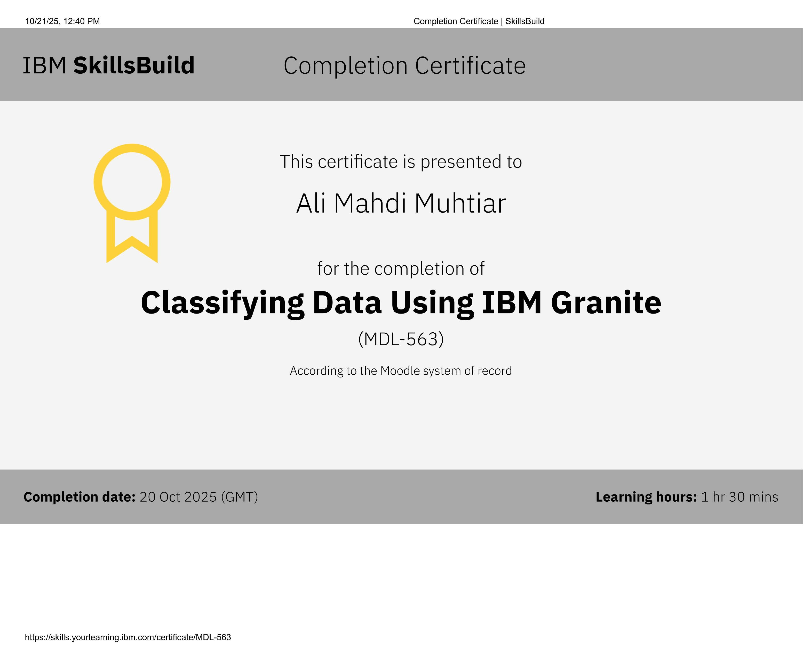
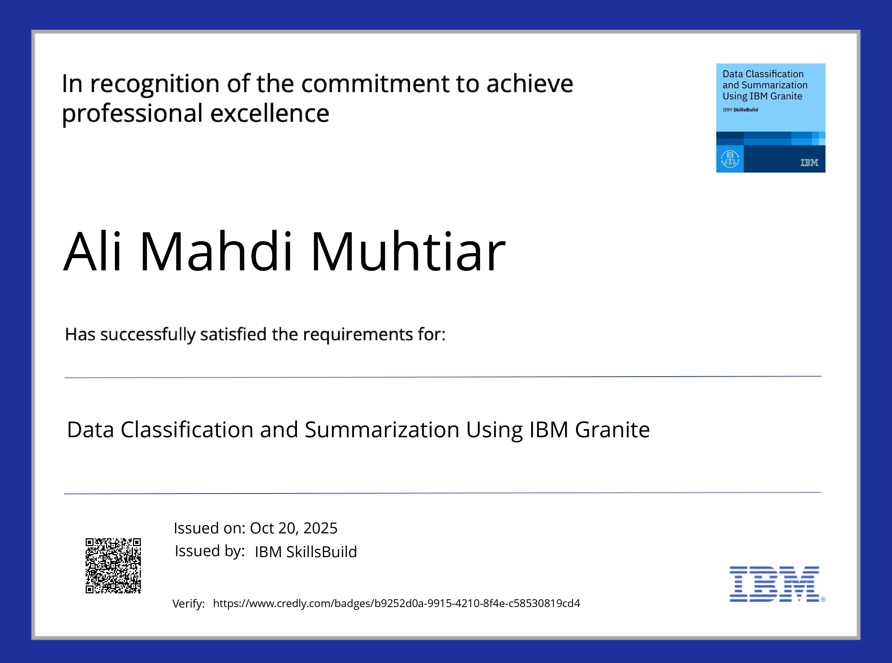
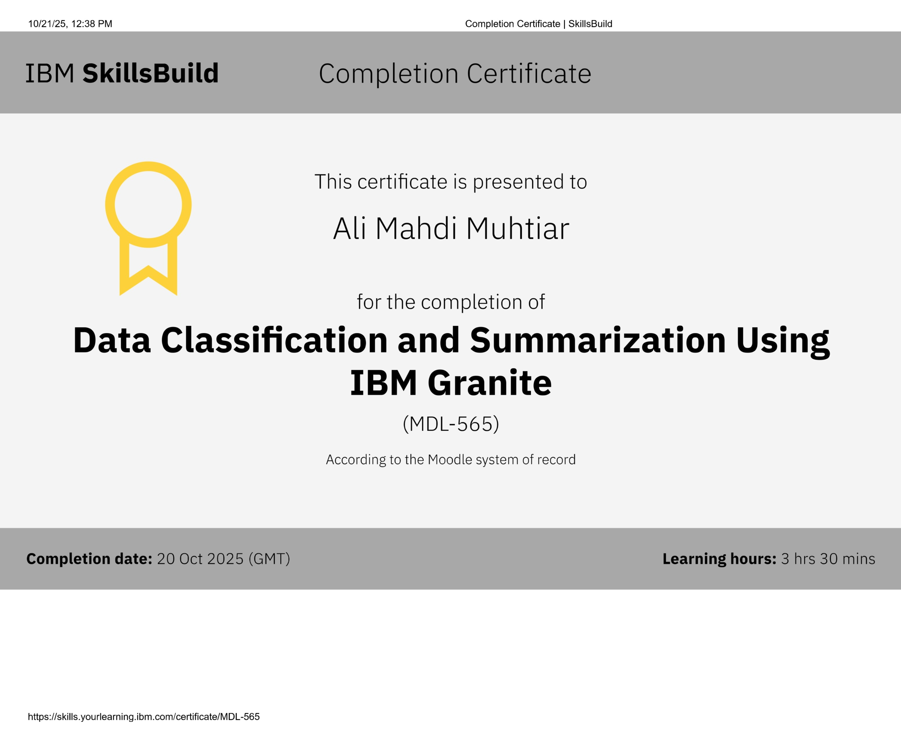
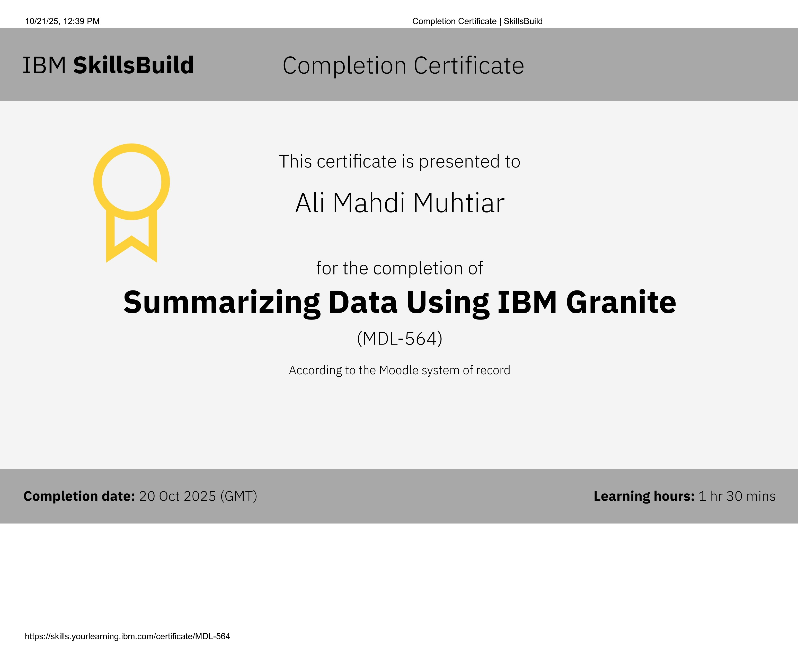
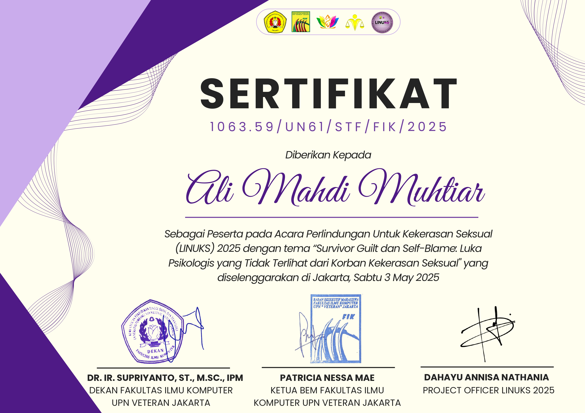

Hi, It's Ali Mahdi Muhtiar
I'm a Auditor & Progammer
Hello, I'm a Bachelor of Information Systems student at UPNVJ with a strong ambition to become a certified Information Systems Auditor (ISO 27002 & CISA). I'm passionate about application development and actively seeking work experience/projects that can bridge academic knowledge with professional practice. I'm open to connections and opportunities in the IT Audit & Development field.
Hire meMy Services
IT Audit & Security
Fokus pada kepatuhan ISO 27002 dan prinsip CISA, menilai risiko sistem informasi, dan kontrol internal.
Application Development
Membangun aplikasi web dan mobile fungsional menggunakan teknologi modern.
Data Analysis & Reporting
Mengolah data untuk wawasan bisnis dan membuat laporan yang informatif.
Technical Skills
Audit & Security
- ISO 27002
- CISA Principles
- Risk Assessment
Programming
- Python
- JavaScript / React
- SQL / Database
My Education
UPN "Veteran" Jakarta
2024 - Sekarang | S1 Sistem Informasi
Mempelajari dasar-dasar IT, fokus pada tata kelola IT, audit sistem informasi, dan pengembangan aplikasi.
Certification & Experience







Contact Me
Tertarik untuk bekerjasama atau berdiskusi? Silakan hubungi saya melalui: